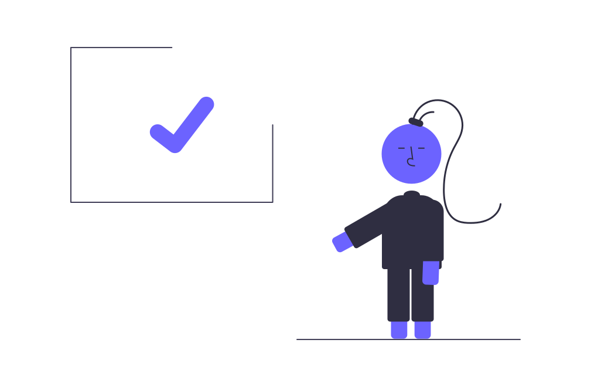

ser un autodidacta
Una persona autodidacta, es aquella que se instruye y adquiere conocimientos nuevos a través de sus propios medios. Ser autodidacta trae grandes ventajas entre las que se mencionan el incremento de la confianza en ti mismo, independencia y autosuficiencia. Ventajas: Mayor rapidez en el aprendizaje. Aprende únicamente lo que necesitas. Desarrollas disciplina. Avanzas a tu propio ritmo. Mayor actualización etc.

En esta pagina podran encontrar material que les ayudara a implementar los saberes a alquirir.